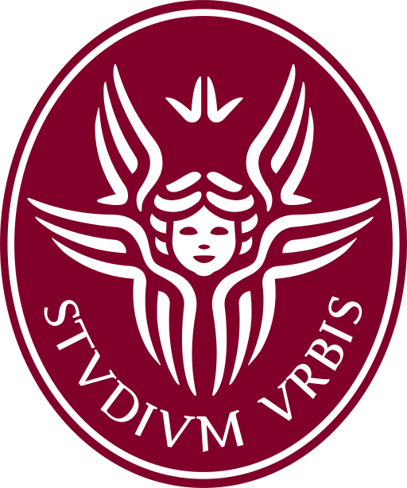
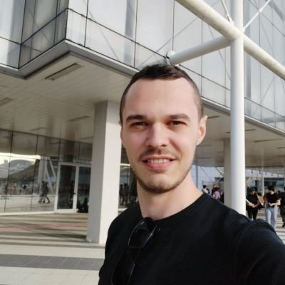

2025ICASSP
COCOLA: Coherence-Oriented Contrastive Learning of Musical Audio Representations
Learning representations that capture how well musical stems belong together.
I’m Emilian. I work on speech enhancement, generative audio and efficient inference. My research includes an ICLR 2024 oral presentation, and I served as an ICASSP 2026 Area Chair. I’m currently interested in making audio models that run efficiently in highly constrained environments.


Speech enhancement
Generative audio
Efficient inference
01 / Selected research
A selection of collaborative work across audio generation, representation learning and faster inference.
Learning representations that capture how well musical stems belong together.
Exploring music reconstruction from non-invasive brain recordings with latent diffusion.
A shared generative model for synthesising music, separating sources and creating accompaniments.
Generating controllable Foley sound that follows the timing of actions in video.
Parallel decoding algorithms that accelerate existing translation models without retraining.
* Equal contribution.
02 / Experience
IRIS Audio Technologies · London
IRIS Audio Technologies · London
Optimising models for real-time speech enhancement on embedded systems.
Ca’ Foscari University of Venice · Venice
Generative modelling for signal processing.
Sony CSL · Tokyo
Music decoding from EEG using latent diffusion models.
Queen Mary University of London (C4DM) · London
Compositional music generation, singing voice separation and Foley synthesis.
Dolby Laboratories · Barcelona
Universal sound separation and efficient research workflows.

Sapienza University of Rome · RomeGeometry processing.
Babelscape · Rome
Porting the BabelNet semantic network from Java to Python.

03 / About
My work sits between audio signal processing and machine learning: understanding sound, building generative models, and making them efficient enough to use.
I earned my Ph.D. in Computer Science at Sapienza University of Rome, advised by Prof. Emanuele Rodolà, graduating with honours in 2024. My research has taken me from Rome and Venice to Barcelona, Tokyo and London.
Romanian & Italian native · English & Spanish fluent
04 / Get in touch
For research conversations, collaborations and speaking enquiries.